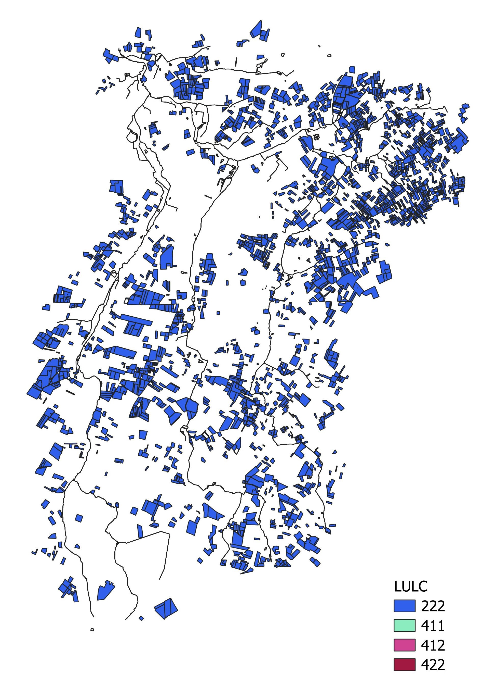
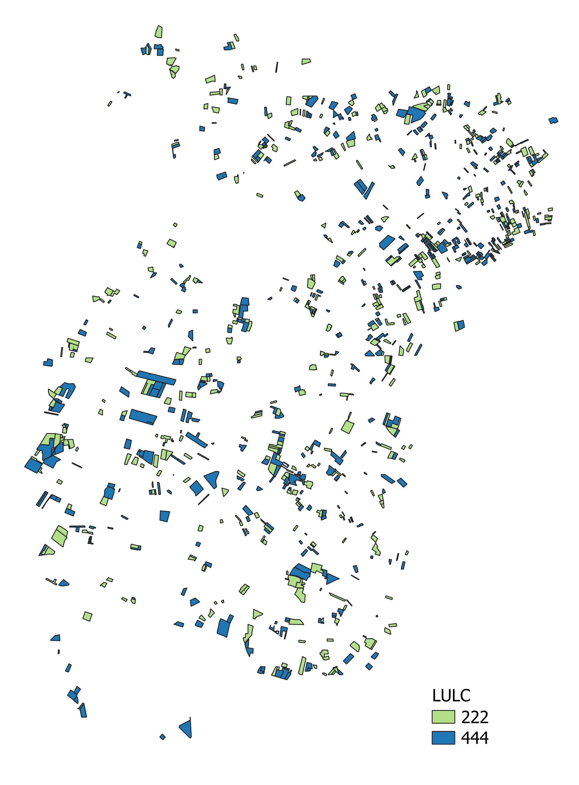
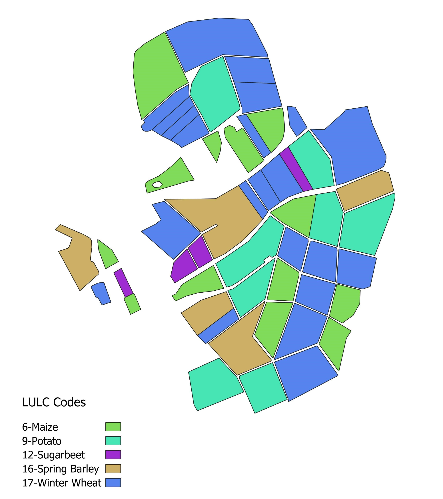

Scenario creation
xCropProtection is currently packaged with 3 scenarios located in \xCropProtection\scenario\:
-
Rummen-full
- A landscape scenario in Rummen, Belgium.
Image

-
Rummen-xCP-TestingScenario
- A subset of the Rummen-full scenario in Rummen, Belgium.
- Contains 1,000 fields with LULC values equally split between 222 and 444.
Image

-
Wetterau-scenario-subset
- A small scenario which serves as a demonstration and test case for xCropProtection.
Image

Custom scenarios
To create a new scenario for use in xCropProtection, users should follow these steps.
- In \xCropProtection\scenario\, create a new folder with the scenario name. In this example, the scenario will be called "test-scenario".
- In \xCropProtection\scenario\test-scenario\, create a folder named "geo". Copy a scenario.xproject file from a different scenario or create a new file and copy the following text:
Add correct values for all elements in scenario.xproject.
<?xml version="1.0" encoding="utf-8"?> <Project xmlns="urn:xLandscapeModelScenarioInfo" xmlns:xsi="http://www.w3.org/2001/XMLSchema-instance" xsi:schemaLocation="urn:xLandscapeModelScenarioInfo ../../model/core/base/scenario.xsd"> <Name>SCENARIO NAME</Name> <Version>1.0</Version> <SupportedRuntimeVersions> <Version variant="xKnowRes" number="0.1"/> </SupportedRuntimeVersions> <Description>DESCRIPTION</Description> <TemporalExtent> <FromDate>2000-01-01</FromDate> <ToDate>2000-12-31</ToDate> </TemporalExtent> <Changelog> <Version number="1.0" date="2000-01-01"> <Change author="your initials">Scenario created.</Change> </Version> </Changelog> <Content> <Item name="LandscapeScenario" target="geo/package.xinfo" version="1" /> </Content> <Contacts> <Contact>Thorsten Schad - thorsten.schad@bayer.com</Contact> </Contacts> </Project> - In the geo folder:
- Place the shapefiles of the spatial data to be used in the scenario.
- Create package.xinfo. Copy from another scenario or use the following text:
<?xml version="1.0" encoding="utf-8"?> <landscape_package xmlns="urn:xCropProtectionLandscapeScenarioGeoPackage" xmlns:xsi="http://www.w3.org/2001/XMLSchema-instance" xsi:schemaLocation="urn:xCropProtectionLandscapeScenarioGeoPackage ../../../model/variant/package.xsd" > <meta> <version>1.0</version> <target_type>222</target_type> <habitat_types>0</habitat_types> </meta> <base> <base_landscape_geometries>LULC.shp</base_landscape_geometries> <feature_id_attribute>ALVID</feature_id_attribute> <feature_type_attribute>LULCTypeId</feature_type_attribute> <additional_attributes/> </base> <supplementary> </supplementary> <supplementary_shapefiles/> </landscape_package>base_landscape_geometriesdefines the name of the shapefile contained in the geo folder.feature_id_attributedefines the field used to distinguish individual fields/features. It is not recommended to use OBJECTID for this.feature_type_attributedefines the field that specifies a feature's LULC type. The TargetCrops value in PPM Calendar xmls refers to the field defined infeature_type_attribute.
- In xCropProtection\CropProtection\, create a file named xCropProtection-test-scenario.xml. It can be left blank for the moment.
- In xCropProtection\CropProtection\PPMCalendars\, create a folder with the same name as the new scenario. In that folder, place all PPMCalendar.xml files that should be included with the new scenario. Note that not every file in this folder will be used during a run of xCropProtection, file names must first be added to xCropProtection-test-scenario.xml. Examples of PPMCalendar.xml files can be found in Templates.
- Modify xCropProtection\CropProtection\xCropProtection-test-scenario.xml to include PPMCalendars. Sample:
Technologies.xml will exist after cloning xCropProtection. However, if a PPMCalendar contains a Technology not already included in Technologies.xml, it must be added to the file in a manner consistent with the elements already present.
<xCropProtection xmlns="urn:xCropProtectionLandscapeScenarioParametrization" xmlns:xsi="http://www.w3.org/2001/XMLSchema-instance" xsi:schemaLocation="urn:xCropProtectionLandscapeScenarioParametrization ../model/core/components/xCropProtection/xCropProtection.xsd"> <PPMCalendars> <PPMCalendar include="PPMCalendars/test-scenario/PPMCalendar-1.xml"/> <PPMCalendar include="PPMCalendars/test-scenario/PPMCalendar-2.xml"/> </PPMCalendars> <Technologies include="Technologies.xml"/> </xCropProtection> - Make a copy of template.xrun; rename the copy with a unique name. Change elements in the file so that xCropProtection uses the new scenario files. Be sure to change:
- Project: scenario/test-scenario
- CropProtectionScenario: test-scenario
- SimID: a string that does not already exist in the run folder
- SimulationStart and SimulationEnd: set the first and last date to be simulated
After these steps are completed, the new scenario files should have the following structure:
├── CropProtection
│ ├── PPMCalendars
│ │ ├── test-scenario
│ │ │ ├── PPMCalendar-2.xml
│ │ │ ├── PPMCalendar-1.xml
│ ├── Technologies.xml
│ └── xCropProtection-test-scenario.xml
├── scenario
│ ├── test-scenario
│ │ ├── geo
│ │ │ ├── (multiple shp files)
│ │ │ └── package.xinfo
│ │ └── scenario.xproject
└── template-test-scenario.xrun
Drag template-test-scenario.xrun onto __start__.bat to run xCropProtection using the new scenario.